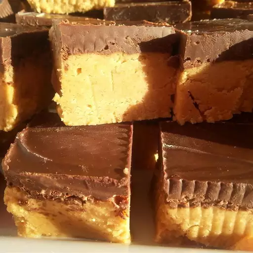

Home
Peanut Butter Bars

Description
You are never too old to enjoy a peanut butter bar.
From adults to children, this recipe will be sure
to please.
Ingredients
- 2 cups graham cracker crumbs
- 2 cups confectioners' sugar
- 1 cup butter or margarine, melted
- 1 cup peanut butter
- 1 ½ cups semisweet chocolate chips
- 4 tablespoons peanut butter
Step
- Mix together graham cracker crumbs, confectioners' sugar, butter or margarine, and 1 cup peanut butter in a medium bowl until well-blended. Press evenly into the bottom of an ungreased 9x13-inch pan.
- Place chocolate chips and 4 tablespoons peanut butter in a microwave-safe bowl. Microwave on high, stirring every 15 seconds, until smooth. Spread mixture over crust.
- Refrigerate for at least 1 hour before cutting into 12 squares.